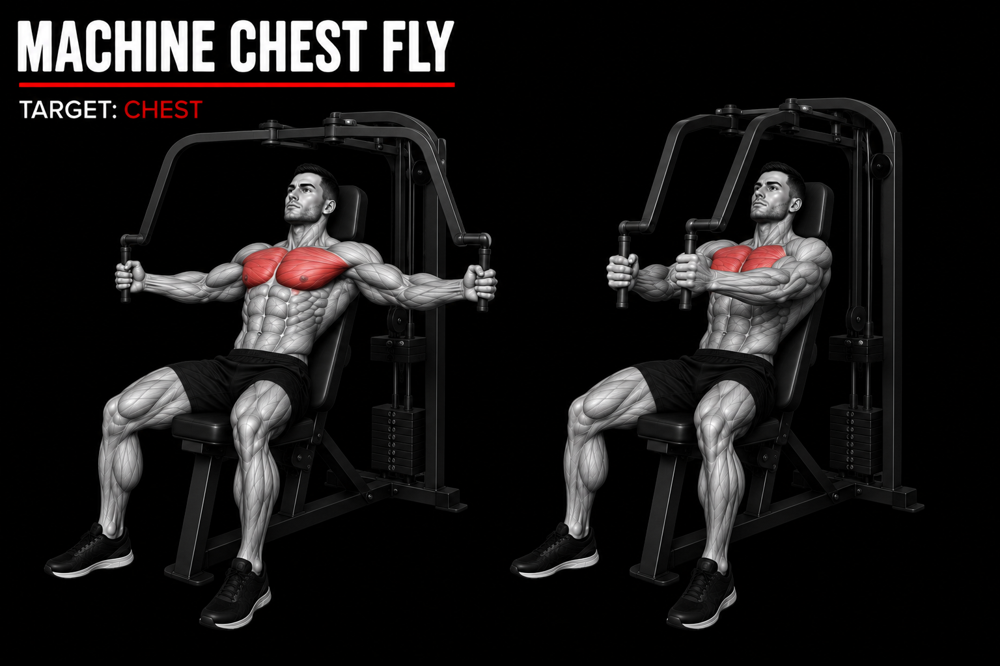
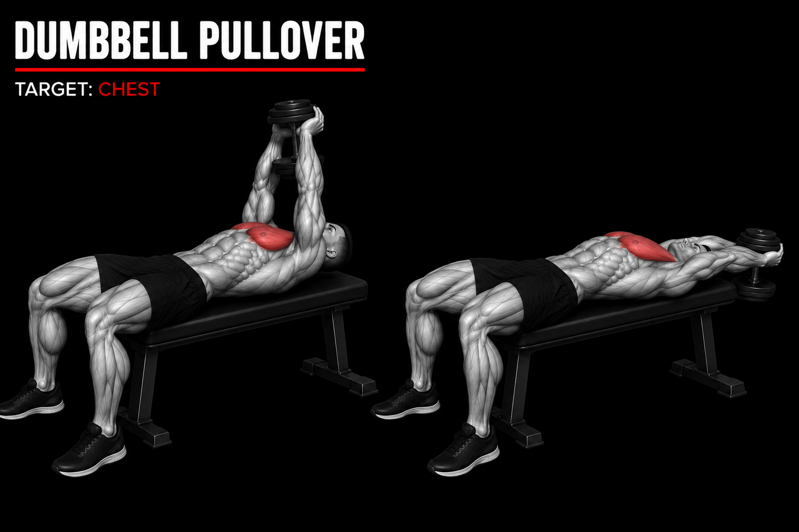

Exerises 1/10
Push Ups

sets:3 sets
reps:8-12 reps
rest time:40sec
Est time:5-10min
Instruction
- Start in a plank position with your hands slightly wider than your shoulders.
- Keep your body straight from your head to your heels.
- Lower your chest toward the floor by bending your elbows.
- Push through your hands to return to the starting position while keeping your core tight.
Exerises 2/10
Machine Chest Press

sets:3 sets
reps:8-12 reps
rest time:40sec
Est time:5-10min
Instruction
- Sit with your back firmly against the pad and place your feet flat on the floor.
- Grip the handles with both hands and keep your wrists straight.
- Push the handles forward until your arms are almost straight, without locking your elbows.
- Slowly bring the handles back toward your chest and repeat with controlled movement.
Exerises 3/10
Incline Dumbbell Press

sets:3 sets
reps:8-10 reps
rest time:40sec
Est time:5-10min
Instruction
- Set the bench to a comfortable incline and sit with a dumbbell in each hand.
- Keep your back against the bench and hold the dumbbells beside your chest.
- Press the dumbbells upward until your arms are almost straight.
- Slowly lower the dumbbells back to chest level and repeat with control.
Exerises 4/10
Flat Dumbbell Press

sets:3 sets
reps:8-10 reps
rest time:40sec
Est time:5-10min
Instruction
- Lie flat on the bench with a dumbbell in each hand and your feet firmly on the floor.
- Hold the dumbbells beside your chest with your palms facing forward.
- Press the dumbbells upward until your arms are almost straight.
- Slowly lower the dumbbells back to chest level and repeat with controlled movement.
Exerises 5/10
Chest Fly

sets:3 sets
reps:8-10 reps
rest time:40sec
Est time:5-10min
Instruction
- Sit on the chest-fly machine with your back firmly against the pad.
- Grip the handles and keep your elbows slightly bent.
- Bring the handles together in front of your chest in a controlled motion.
- Slowly return the handles to the starting position and repeat.
Exerises 6/10
Cable Chest Fly

sets:3 sets
reps:8-10 reps
rest time:40sec
Est time:5-10min
Instruction
- Set the cables at about chest height and stand in the middle with one handle in each hand.
- Keep your chest up and back straight, with a slight bend in your elbows.
- Bring your hands together in front of your chest in a smooth, controlled motion.
- Slowly return your hands to the starting position and repeat without locking your elbows.
Exerises 7/10
Incline Push Ups

sets:3 sets
reps:8-10 reps
rest time:40sec
Est time:5-10min
Instruction
- Place your hands on a stable elevated surface slightly wider than shoulder-width.
- Keep your body straight from your head to your heels and tighten your core.
- Bend your elbows and lower your chest toward the surface in a controlled motion.
- Push through your hands to return to the starting position without locking your elbows.
Exerises 8/10
Dumbbell Pullover

sets:3 sets
reps:8-10 reps
rest time:40sec
Est time:5-10min
Instruction
- Lie on a bench with your feet flat on the floor and hold one dumbbell securely with both hands.
- Keep your arms slightly bent and position the dumbbell above your chest.
- Slowly lower the dumbbell behind your head while keeping your core stable.
- Pull the dumbbell back over your chest in a controlled motion without overextending your shoulders.
Exerises 9/10
Chest Dips

sets:3 sets
reps:8-10 reps
rest time:40sec
Est time:5-10min
Instruction
- Grip the parallel bars firmly and support your body with your arms straight.
- Lean your upper body slightly forward and keep your shoulders controlled.
- Bend your elbows and lower your body slowly until you feel a comfortable chest stretch.
- Push through your hands to return to the starting position, keeping the movement controlled.
Exerises 10/10
Knee Push Ups

sets:3 sets
reps:8-10 reps
rest time:40sec
Est time:5-10min
Instruction
- Grip the parallel bars firmly and support your body with your arms straight.
- Lean your upper body slightly forward and keep your shoulders controlled.
- Bend your elbows and lower your body slowly until you feel a comfortable chest stretch.
- Push through your hands to return to the starting position, keeping the movement controlled.